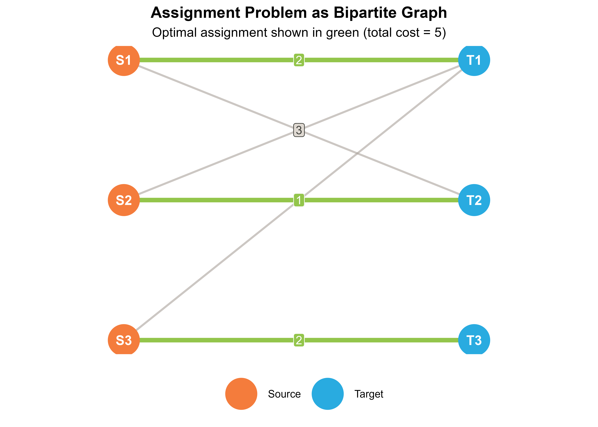

Overview
This vignette presents the mathematical formulation and algorithmic
foundations underlying couplr. Understanding these concepts helps you
choose the right solver for your problem, debug unexpected behavior, and
appreciate the theoretical guarantees. For practical usage examples, see
vignette("getting-started") and
vignette("matching-workflows").
Terminology
Cost Matrix
A matrix where entry represents the cost of assigning source to target . Sources correspond to rows, targets to columns.
Assignment
A selection of (source, target) pairs such that each source is assigned to at most one target, and each target receives at most one source. Mathematically: binary variables with row-sum and column-sum constraints.
Dual Variables
Auxiliary variables associated with rows and columns. Dual feasibility requires for all pairs. Strong duality ensures primal-dual optimality.
Visualizing the Problem
The LAP corresponds to finding a minimum-weight perfect matching in a weighted bipartite graph:

The optimal solution (green edges) assigns S1→T1, S2→T2, S3→T3 with total cost 2 + 1 + 2 = 5.
Algorithms
1. Hungarian Algorithm
Complexity:
The classical method (Kuhn, 1955) based on work by Kőnig and Egerváry. Maintains dual feasibility while iteratively improving the primal solution.
Algorithm Steps
- Initialize dual variables: ,
- Construct equality graph with tight edges only
- Find maximum matching in
- If complete: optimal solution found
- Otherwise: compute dual update and repeat
When to Use
- Educational purposes (clear conceptual structure)
- Small problems (n < 500)
- When numerical stability is paramount
cost <- matrix(c(10, 19, 8, 15, 10, 11, 9, 12, 14), nrow = 3, byrow = TRUE)
result <- lap_solve(cost, method = "hungarian")
print(result)
#> Assignment Result
#> =================
#>
#> # A tibble: 3 × 3
#> source target cost
#> <int> <int> <dbl>
#> 1 1 3 8
#> 2 2 2 10
#> 3 3 1 9
#>
#> Total cost: 27
#> Method: hungarian2. Jonker-Volgenant Algorithm
Complexity: expected, space
The default algorithm in couplr (1987). Uses shortest augmenting paths with efficient column reduction preprocessing.
Key Features
- Column reduction: Greedy initial assignment
- Shortest path augmentation: Dijkstra-style search
- ε-complementary slackness: Allows larger steps than Hungarian
When to Use
- General-purpose default (
method = "auto") - Dense problems up to n ≈ 2000
- When you need reliable, predictable performance
set.seed(123)
n <- 100
cost <- matrix(runif(n * n, 0, 100), n, n)
result <- lap_solve(cost, method = "jv")
cat("Total cost:", get_total_cost(result), "\n")
#> Total cost: 149.09113. Auction Algorithm Family
Complexity:
Economic approach (Bertsekas, 1988): sources “bid” for targets, prices adjust based on competition.
Variants
| Variant | Method Name | Key Feature |
|---|---|---|
| Standard | "auction" |
Fixed adaptive ε, queue-based |
| Scaled | "auction_scaled" |
ε-scaling phases |
| Gauss-Seidel | "auction_gs" |
Sequential sweep |
Core Algorithm
- Each unmatched source finds best target
- Compute bid increment based on first-best minus second-best
- Highest bidder wins; price increases
- Repeat until all matched
When to Use
- Large dense problems (n > 1000)
-
"auction_scaled"for large cost ranges (> 10⁶) -
"auction_gs"for problems with spatial structure
set.seed(123)
n <- 200
cost <- matrix(runif(n * n, 0, 100), n, n)
result <- lap_solve(cost, method = "auction")
cat("Total cost:", get_total_cost(result), "\n")
#> Total cost: 159.0574. Sparse Assignment (SAP)
Complexity: for edges
Optimized for sparse problems where most entries are forbidden (NA or Inf).
Key Features
- Adjacency list representation
- Sparse priority queues
- Efficient for rectangular problems
When to Use
- Sparsity > 50% (many forbidden entries)
- Rectangular problems (n ≠ m)
- Large but sparse structures
set.seed(789)
n <- 200
cost <- matrix(Inf, n, n)
edges <- sample(1:(n^2), floor(0.3 * n^2))
cost[edges] <- runif(length(edges), 0, 100)
result <- lap_solve(cost, method = "sap")
cat("Total cost:", get_total_cost(result), "\n")
#> Total cost: 564.33935. Hopcroft-Karp for Binary Costs (HK01)
Complexity:
Specialized for binary cost matrices where .
Algorithm
- Find maximum matching using only zero-cost edges
- Augment with minimum 1-cost edges if incomplete
When to Use
- Binary costs only (0 or 1)
- Unweighted bipartite matching
- Very large binary problems (n > 10000)
set.seed(101)
n <- 300
cost <- matrix(sample(0:1, n^2, replace = TRUE, prob = c(0.3, 0.7)), n, n)
result <- lap_solve(cost, method = "hk01")
cat("Total cost:", get_total_cost(result), "\n")
#> Total cost: 06. K-Best Solutions (Murty’s Algorithm)
Complexity: where is single LAP complexity
Finds the k best assignments in order of increasing cost.
Algorithm Structure
- Solve initial LAP
- Partition solution space by forbidding/forcing edges
- Maintain priority queue of partial solutions
- Extract k best
When to Use
- Robustness analysis
- Alternative plans when optimal is infeasible
- Understanding cost landscape
cost <- matrix(c(10, 19, 8, 15, 10, 18, 7, 17, 13, 16, 9, 14, 12, 19, 8, 18),
nrow = 4, byrow = TRUE)
kbest <- lap_solve_kbest(cost, k = 5)
summary(kbest)
#> # A tibble: 5 × 4
#> rank solution_id total_cost n_assignments
#> <int> <int> <dbl> <int>
#> 1 1 1 49 4
#> 2 2 2 50 4
#> 3 3 3 50 4
#> 4 4 4 51 4
#> 5 5 5 51 4Numerical Considerations
Floating Point Precision
- Complementary slackness checked with
- Avoid cost ranges >
- Scale costs to reasonable range if needed
Edge Cases
Infeasible problems: When a row has no finite entries
cost <- matrix(c(1, 2, 3, Inf, Inf, Inf, 4, 5, 6), nrow = 3, byrow = TRUE)
feasible <- all(rowSums(is.finite(cost)) > 0)
cat("Feasible:", feasible, "\n")
#> Feasible: FALSEDegenerate problems: Many tied costs may produce different (but equally optimal) solutions across algorithms
Performance Summary
| Size | Hungarian | JV | Auction | SAP | HK01 |
|---|---|---|---|---|---|
| < 100 | ✓✓✓ | ✓✓✓ | ✓✓ | ✓† | ✓‡ |
| 100-500 | ✓✓ | ✓✓✓ | ✓✓ | ✓✓† | ✓✓‡ |
| 500-2000 | ✓ | ✓✓✓ | ✓✓✓ | ✓✓✓† | ✓✓✓‡ |
| > 2000 | ✗ | ✓✓ | ✓✓✓ | ✓✓✓† | ✓✓✓‡ |
† For sparse problems | ‡ For binary costs only
References
- Kuhn, H. W. (1955). The Hungarian method for the assignment problem. Naval Research Logistics Quarterly.
- Jonker, R., & Volgenant, A. (1987). A shortest augmenting path algorithm for dense and sparse linear assignment problems. Computing.
- Bertsekas, D. P. (1988). The auction algorithm: A distributed relaxation method. Annals of Operations Research.
- Murty, K. G. (1968). An algorithm for ranking all assignments in order of increasing cost. Operations Research.
- Burkard, R., Dell’Amico, M., & Martello, S. (2009). Assignment Problems. SIAM.
See Also
-
vignette("getting-started")- Basic usage and quick start -
vignette("matching-workflows")- Production matching pipelines -
vignette("pixel-morphing")- Large-scale approximation strategies -
?lap_solve,?assignment,?lap_solve_kbest